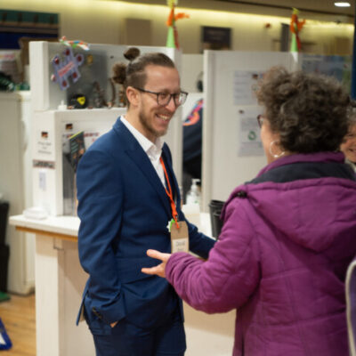
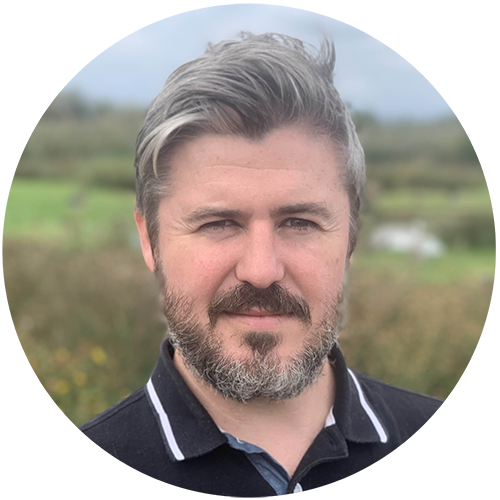
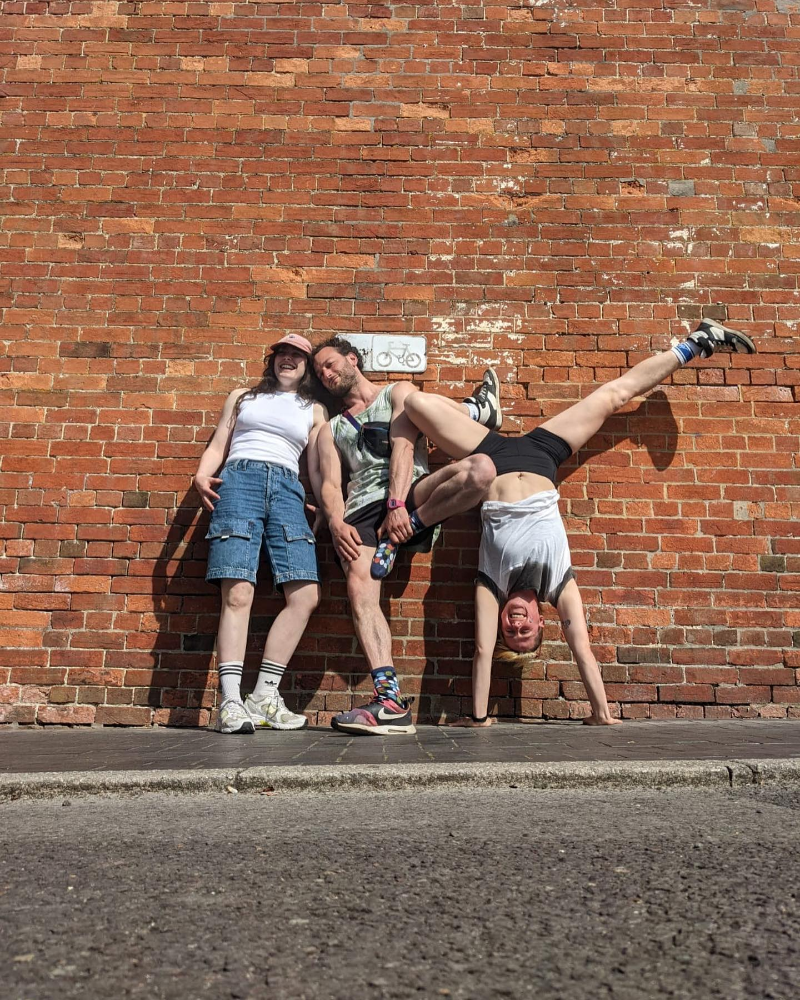

"Your wild cat was universally said to be the best puppet animal Amal has met on the Walk. Big praise considering she has met a lot!"
Connie Treves - Good Chance Theatre

"A masterclass in audience engagement."
David Doust - Outdoor Arts UK

"A riot of colour and surreal theatricality."
Ashley Peevor - DOCA
see more
About
Cat Sith is a high-impact street-theatre spectacle that fuses
acrobatic puppetry with physical theatre. The show follows Sammy—
an ever-hopeful cat-catcher—on a pursuit of a
mysterious feline prowling streets and green spaces. What begins as
two separate walkabouts soon turns into a mischievous promenade
chase, before exploding into an acrobatic circle-act finale.
The production premiered in 2021 at SURGE Festival (Glasgow) and has
since delighted crowds at Spraoi (Ireland), COP26 with
Little Amal, school playgrounds and even aboard a boat—
proof of its agile, low-tech touring design. Suitable for all ages,
Cat Sith blurs the line between reality and folklore,
awakening child-like curiosity in adults and children alike.
Ludic Acid's creative team blends circus acrobatics, puppetry and
theatre to craft work that is playful, accessible and easily adapted
to site-specific themes or locations—whether that's a town square,
woodland trail or greenfield site.
"Your wild cat was universally said to be the best puppet animal Amal has met on the Walk. Big praise considering she has met a lot!"
Connie Treves - Good Chance Theatre
"A masterclass in audience engagement."
David Doust - Outdoor Arts UK
"A riot of colour and surreal theatricality."
Ashley Peevor - DOCA
Team
Core Team
Jonah Russell – versatile acrobat and creator, devising and performing with companies such as Cie. Max Calaf, Mimbre and Cirqulation Locale; Worked with Kun Seng Keng UK Lion-Dance team workshopping for TriOperas
Lizzie Clapham – circus artist blending acrobatics, clown and physical theatre; has toured with Cirque Bijou, Mimbre and The Invisible Circus after graduating Circomedia.
Rachel Still – actor-musician with eight years in youth arts; holds a BA in Acting for Stage & Screen and specialises in children's theatre.

Rachel, Jonah and Lizzie.
Collaborators
Lucie N'Duhirahe – award-winning circus performer and outside-eye, co-founder of Collectif & Then.
Seb Mayer – puppet designer/fabricator whose outdoor show Don Quixote was praised as "brilliant puppet design" by Mervyn Millar
Jo May – puppet maker/puppeteer with credits from Little Angel Theatre to the National.
Info
Duration: 25–30 min
Footprint: Outdoor, initially roving with finale in the round